基于微型法布里–珀罗谐振腔的自注入锁定二极管激光器
热噪声极限稳频
摘要
我们提出了一种由微型核心器件构成的超稳激光系统：其自注入锁定激光器由分布反馈（DFB）激光二极管与集成微环谐振器组成，并搭配一个3 ml 真空间隔的法布里–珀罗谐振腔。通过仔细处理各项技术噪声源，特别是残余振幅调制，我们实现了在1~10 s平均时间内的热噪声极限分数频率不稳定度，这是紧凑型谐振腔稳频激光器所报道的最低值之一。该性能是在采用常规多层介质反射镜、且谐振腔精细度仅为适中的的条件下取得的。输出频率的这种稳定性，加之核心器件体积小，以及可在同一微环谐振器中产生克尔频率梳的潜力，为面向可搬运光钟和低噪声微波合成的全集成光子频率参考提供了一条可行路径。
I 引言
超稳激光器已成为光原子钟 [50, 14]、精密光谱 [72]、低噪声微波产生 [38]、相干光通信 [34]、雷达 [17]以及分布式光纤传感 [49]的基石性技术。在所有这些应用中，性能直接由激光器的谱纯度决定：线宽越窄、分数频率不稳定度越低，相干探测时间就越长。最先进的激光系统需要低温单晶硅参考谐振腔 [41, 7]，或长度约半米的超低膨胀（ULE）玻璃谐振腔 [57, 24]，从而实现低于的分数频率不稳定度和毫赫兹量级的线宽。 然而，这种性能以体积、复杂度和环境隔离为代价，使此类系统只能局限于实验室环境。与此同时，越来越多的现场部署与机载、星载应用——可搬运光钟、测距与导航系统以及机载或天基仪器——亟需相干性相当的紧凑型激光源 [22, 27, 40]。
我们重点关注基于微环谐振器（MR）的集成光子解决方案，因为它们为光学系统的小型化提供了一条前景广阔的道路 [74, 75, 71, 62, 67, 68]。事实上，集成激光器使得新一代高效光子器件得以发展，这些器件满足了现代关于小尺寸、重量与功耗（SWaP）的概念 [59, 66, 63, 55, 58]。将激光二极管自注入锁定（SIL）到高品质因子集成微谐振腔 [35, 30, 9]，为实现瞬时线宽低于 1 kHz、与商用光纤激光器相当的芯片级光源提供了一条直接途径。基于 SIL 的激光器的短期与长期稳定度，在根本上受限于电介质微谐振腔材料的热折射率噪声（TRN） [26, 53]。虽然 SIL 可以达到由物理极限决定的窄瞬时线宽，但长期稳定度仍受环境噪声影响。将激光输出频率锁定到外部光学标准具，可在数秒量级的时间间隔上提供额外的稳定 [25, 23, 2, 45]。
在近期的一系列工作 [38, 46, 8, 29] 中，微型法布里–珀罗（FP）谐振腔（体积为 ml 量级）已成功用于 SIL 激光器的长期稳定。采用 Pound–Drever–Hall（PDH）技术将激光器锁定到高精细度谐振腔 [13]，可将激光频率噪声压低到远低于谐振腔线宽的水平，因而残余不稳定度最终由 FP 腔间隔件、基底与反射镜镀膜的布朗热噪声决定 [33]。 由于相对频率稳定度与相对腔长起伏 [77] 成正比，缩短腔长必然会抬高热噪声本底。即便如此，厘米量级的真空隙谐振腔仍能保持较低的 水平的热噪声本底 [54]——这对大多数现场应用已足够——而其小尺寸还进一步降低了振动灵敏度 [5]。因此，参考 FP 谐振腔本身——它传统上是超稳激光器系统中最笨重的部件之一——的小型化，是迈向紧凑型超稳激光器发展的尤为关键的一步。 在实践中要达到热噪声本底，需要仔细抑制振动耦合 [5]、光热效应 [76, 69]，以及光电反馈环路中的所有技术噪声源，包括残余振幅调制（RAM） [64, 78]。
我们的目标是使 1 s 积分时间下的分数频率不稳定度优于 ，以满足可搬运光钟、射频光子振荡器、通信和导航系统的要求。在本工作中，我们演示了一种超稳激光系统，它由一个自注入锁定到集成 微环谐振器（MR）的紧凑激光二极管，以及一个作为长期参考的微型（ ml）真空间隙法布里–珀罗（FP）谐振腔构成。与此前基于线圈谐振器的结果 [23, 48] 不同，我们采用环形微谐振腔，从而既能实现线性自注入锁定（SIL）运行，也能进入涉及光频梳产生的非线性工作状态。此外，与先前报道的技术 [23, 38] 相比，我们通过激光二极管电流控制来调节 SIL 激光输出，而非常用的声光频率驱动方式。我们演示了线性 SIL [37] 和非线性 SIL [70]（伴随光频梳产生）两种状态下的 SIL 激光器频率稳频。该系统达到了谐振腔热噪声极限，在 1–10 s 平均时间下分数频率不稳定度为 ，这是 ml 量级标准具稳频激光器所报道的最低值之一。结合环形微谐振腔与光频梳产生的兼容性，我们的结果为面向可搬运光钟和低噪声微波光子学的紧凑、受热噪声限制的光子频率参考提供了一条切实可行的途径。
II 稳频方案
该系统由一个分布式反馈（DFB）激光二极管和一个微型 FP 谐振腔组成，前者的频率自注入锁定到集成 MR 的本征模，后者提供长期光频参考。首先，我们将 DFB 激光二极管与集成 MR 对接耦合 [60]，构成混合集成 SIL 激光器。其次，我们利用 Pound–Drever–Hall（PDH）技术 [13, 4] 将 SIL 激光器的频率锁定到外部参考谐振腔。由此得到的误差信号施加到 DFB 二极管电流上，直接作用于 SIL 激光器频率，从而无需额外的声光频率执行器。在线性 SIL 状态下，锁定范围内激光频率随二极管电流几乎线性变化，为 PDH 伺服回路提供了合适的执行器 [65, 35, 37]。
完整的稳频系统包含三条由 FP 谐振腔信号导出的反馈支路。第一条支路控制激光二极管电流，稳定光频；第二条稳定入射到参考谐振腔上的光功率；第三条主动抑制残余幅度调制（RAM）。这些回路共同稳定可能干扰 PDH 锁定的相关自由度，从而使系统工作在接近微型 FP 谐振腔热噪声极限的状态。
III 实验装置
III.1 激光二极管自注入锁定
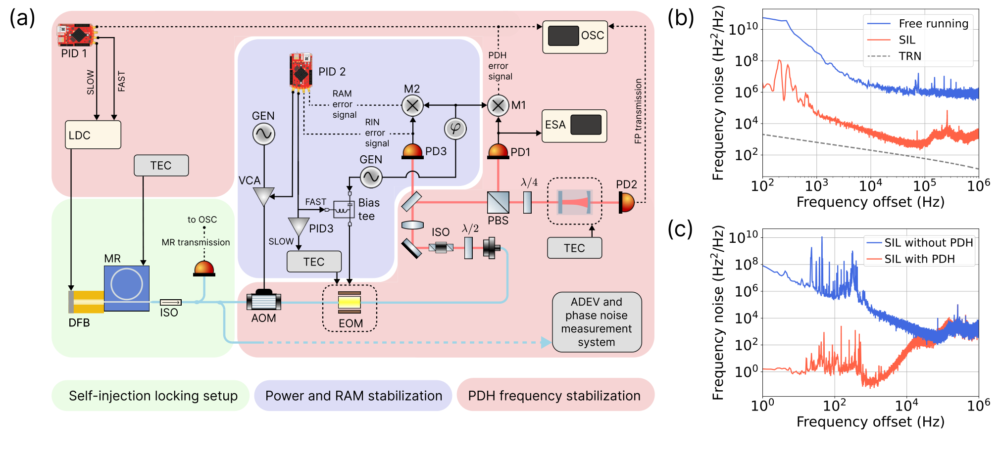
实验装置如图1(a)所示。我们采用输出功率最高达 150 mW 的 1545 nm DFB 激光器作为泵浦。该激光器与一块氮化硅光子芯片对接耦合，芯片上集成了一个总 Q 值为、自由光谱范围为GHz 的微谐振腔；详细表征结果见方法 B。芯片温度由温度控制器（TEC）稳定在，稳定度为 1 mK。芯片与激光器之间的距离可使来自微谐振腔的背向散射相位得以对准，并可通过压电平移进行调节。在线性 SIL 状态下，DFB 激光器输出功率为 40 mW，而经氮化硅芯片后，SIL 状态下的输出功率为 1.5 mW。
III.2 Pound-Drever-Hall 装置
参考 FP 谐振腔由 ULE 玻璃制成，腔长为，精细度为，品质因数为；它置于真空腔内，并在零热膨胀系数温度下进行温度稳定。FP 谐振腔的详细表征见方法 D。
激光束的相位调制由内置起偏器的温控光纤耦合电光调制器（EOM）实现。EOM 由 RF 发生器提供的 9.1 MHz 信号驱动。光束通过 EOM 后准直进入装置的自由空间部分，该部分与 FP 谐振腔一同放置在光学平台上，且无主动隔振。功率为 30 的光束通过透镜与 FP 实现模场匹配。
由谐振腔反射的光由光电探测器 PD1 检测。其输出信号经放大后，利用射频发生器的第二路输出（该输出提供调制信号）在鉴相器上进行解调。调节调制信号与解调信号之间的相对相位，使 PDH 误差信号的斜率最大。所得误差信号由在 STEMLab 125-14 单板计算机上实现的数字 PII2控制器（PID 1）处理。控制器输出信号通过置于激光二极管控制器（LDC）Toptica DCC 110 之后的定制并联电路，对激光二极管的电流进行调制。反馈带宽约为 100 kHz，主要受限于电子学延迟。我们还把控制器的额外积分输出送入激光二极管控制器的慢速、宽范围电流调制输入，以提高对长期频率漂移和大幅扰动的鲁棒性。
III.3 功率稳定
光功率通过压控放大器（VCA）稳定，该放大器调节施加于光纤耦合声光调制器（AOM）上的射频驱动功率，AOM 安装在电光调制器（EOM）之前。需要指出的是，我们仅将 AOM 用于光功率稳定，而频率稳定则通过控制 DFB 激光二极管的电流实现。因此，在所采用的实验方案中，AOM 可以用更紧凑的元件替代，例如集成光强调制器。
III.4 残余幅度调制的稳定
对稳定系统的详细表征表明，残余幅度调制（RAM）[64]的波动是长平均时间下频率不稳定度的主要来源。通过引入光隔离器来消除寄生标准具，可实现部分无源 RAM 抑制；然而，这只带来很小的改善。尽管光纤耦合 EOM 具有结构紧凑、半波电压低的优点，但输入偏振与晶轴之间装调的长期稳定性较差，导致在平均时间 s 下分数频率不稳定度约为 。
为了主动稳定 RAM 水平，我们在谐振腔之前分出约一半光功率，并将其引导至光电探测器 PD3，该探测器与 PDH 检测所用的探测器相同。光电探测器输出的一路进行解调以提取 RAM 信号，第二路则用于监测并稳定入射到谐振腔上的光功率。这两路信号均由第二块 STEMLab 125-14 板卡（PID 2）处理，板卡上的独立数字 PI 控制器产生相应的反馈信号。
RAM 反馈经由偏置器（bias tee）加到电光调制器（EOM）上，偏置器将射频驱动信号与直流耦合的反馈信号合并。该反馈回路中的积分器会随时间逐渐饱和。为防止饱和，我们通过调节 EOM 温度控制系统的设定点，缓慢地将其输出拉回零点。事实上，主动 RAM 稳定是所开发实验技术的一个关键特性，它使分数频率不稳定度在 0.1 至 10 s 的平均时间内降低到 以下。作为对比，我们在图 10 中给出了有、无主动 RAM 稳定时实验测得的阿伦偏差（见附录 E）。
IV 结果
为了表征稳频激光器的性能，我们将其输出与 Avesta 光频梳的相应谱分量拍频。由于光频梳位于另一间实验室，稳频 SIL 激光器的辐射通过带有主动光纤噪声抑制的光纤链路传输。光频梳以一台用于铥光钟的 1140 nm 钟激光器 [18] 为参考。该 1140 nm 激光器在 1 s 平均时间下的分数频率不稳定度约为 ，低于我们 FP 谐振腔的热噪声限（）。
与自由运转激光器相比，SIL 激光器的频率噪声抑制情况见图 1(b)。激光器的瞬时线宽已接近热折射噪声 [26]，见图 1(b)中的灰色虚线。图 1(c)给出了 SIL 激光器在锁定与未锁定 FP 谐振腔（PDH 稳频）时实验测得的频率噪声功率谱密度（PSD）。在反馈回路带宽内，PDH 稳频有效抑制了 kHz 以下傅里叶频率处的频率噪声，在 1 Hz 处降噪超过 75 dB。10 至 1000 Hz 之间观察到的尖锐共振归因于谐振腔的机械振动，因为实验装置未采用主动隔振。
为表征长期频率稳定度，同时计入 1140 nm 参考激光器的不稳定度，我们采用三角帽法 [20]。该方法可由两两拍频测量估计各台激光器各自的频率不稳定度。测量流程的细节见附录 C。在此分析中，两台超稳激光器同时与光频梳比对：本工作开发的稳频 SIL 激光器，以及相邻实验室中用于镱离子光谱的 871 nm 激光器 [16]。我们用频率计记录两路拍频信号，去除其线性频率漂移，并计算每台激光器各自的阿伦偏差。所得 SIL 激光器的分数频率不稳定度在 1 至 10 s 平均时间内为 （见图 2），与 FP 谐振腔的热噪声限一致。
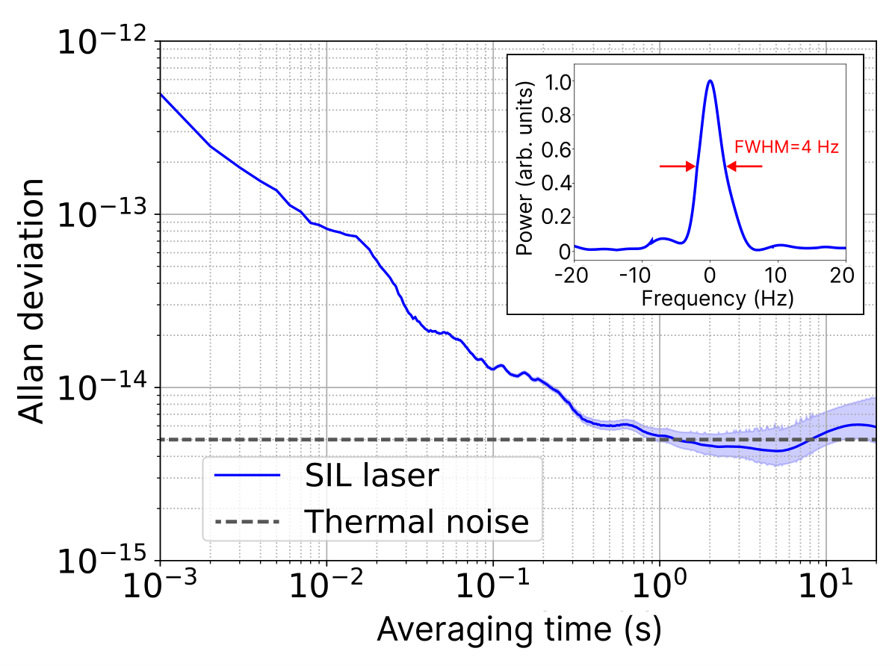
在直接线宽测量中，我们使用分辨率带宽（RBW）为 3 Hz 的频谱分析仪，记录 SIL 激光器与稳频频率梳之间的拍频谱。所测光谱见图 2插图。由这些数据，我们估计半高全宽（FWHM）为 4 Hz，主要受限于仪器的 RBW。
除了单频运转外，我们还考察了在克尔频率梳产生区域（非线性 SIL 区 [70]）能否保持稳频。若能成功，该方法即可实现对频率梳中心梳线的稳频，而无需通常为此引入的额外连续波（CW）激光器和锁相环。我们采用了一个不同的微谐振腔（MR），其群速度色散为反常 、自由光谱范围为 、品质因子为 。在较高的 DFB 电流值（ mW）下，我们在该 MR 中激发得到孤子频率梳。相应的孤子光谱见图 3插图。采用与单频 SIL 激光器锁定相同的实验步骤，我们实现了频率梳泵浦梳齿（ THz）到 FP 谐振腔本征模的锁定。结果，在 1–20 s 的平均时间内，所测 的阿伦偏差低于 （见图 3），接近线性 SIL 区所达到的稳定度。
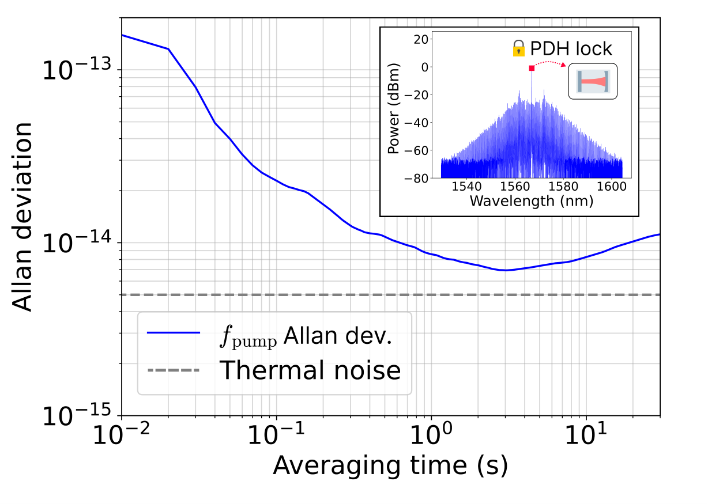
事实上，采用相同的步骤，在具有正常 GVD 的 MR（即正文研究所用的 MR）中激发平顶微梳（platicon），我们发现，与孤子微梳（在 1–20 s 处为 ）相比，泵浦频率 的相对频率不稳定性更高（在 1 s 处为 ）。相应的平顶微梳光谱见附录 H。稳定度的这一下降可能与最靠近泵浦的频率梳边带的影响有关，因为实验中未使用光带通滤波器来抑制这些边带。的确，孤子的最近边带比中心梳线低 25 dB（图 3插图），而平顶微梳的最近边带仅比泵浦低 8 dB（见附录 H）。不过，这一现象仍有待进一步研究。
V 讨论
我们实现了电信波段稳频激光器，在1–10 s的平均时间下，其分数频率不稳定度为 。由于采用了三边帽法，该数值代表本征不稳定度，且与超稳参考激光器的不稳定度无关。 在1至10 s的平均时间内，当前性能从根本上受限于参考谐振腔的热噪声。因此，要进一步提升性能，就需要降低谐振腔的热噪声。然而，保持系统的紧凑性至关重要；因此，增大腔长或采用低温运行都不可行。最切实可行的方法是采用熔融石英反射镜基底，预计可将热噪声降低约两倍。
同时影响谐振腔和残余幅度调制的环境温度涨落，预计只有在数百秒的平均时间下才会变得显著。相比之下，改善1 s以下平均时间内的性能更为紧迫，因为这对激光器线宽的影响最大。
该区域的主要限制之一是伺服控制器相对较高的本征噪声（见附录 D）。在本工作中，我们有意采用简单的数字控制器，以保持紧凑的结构并避免复杂的电子硬件。尽管如此，现代数字伺服控制器能够同时提供低输入噪声和低延迟 [47]，并可用于未来的实现方案。
紧凑型法布里–珀罗腔面临的更具挑战性的问题，是在避免笨重复杂的主动隔振系统的同时抑制机械振动的影响。我们的频率噪声功率谱密度呈现出若干明显的振动致峰，这表明振动抑制对于进一步提升性能至关重要。一种有前景的方法是监测振动，并利用前馈校正方案补偿其影响。
不同应用会采样所展示噪声谱的不同段（见图 2）。光钟主要对 0.1–10 s 询问时间内的激光不稳定度敏感。我们系统在 1–10 s 的热噪声极限性能可直接支撑低量级的钟不稳定度，可与最先进的可搬运光钟相媲美 [22, 21]。这类可搬运光钟是计时水准测量的关键仪器，在野外测量任务中可分辨厘米级的重力位差。 与之相反，通过光频分频产生微波 [38, 28, 11] 依赖于 1 kHz–1 MHz 傅里叶频率处的相位噪声，这一点对雷达和通信十分重要。假设所示激光系统理想分频至 10 GHz（分频因子 20 000），该光学参考源在 10 kHz 处的投影相位噪声将低于 -150 dBc/Hz。作为一项重要结果，我们在频率梳产生状态下，对充当光梳泵浦齿的 DFB 激光二极管实现了 PDH 稳频，从而凸显了所设计系统在将稳定度从光频域传递到微波域方面的潜力。
VI 结论
我们演示了一种超稳定激光系统，该系统将基于高 Si3N4 环形微谐振腔的混合集成自注入锁定二极管激光器与微型(3 ml)真空间隙法布里–珀罗参考谐振腔相结合。通过对电光反馈回路技术噪声的细致表征与抑制——尤其是对残余振幅调制的主动稳定，使长期不稳定性降低了一个数量级以上——该系统得以达到参考谐振腔的布朗热噪声本底。在1–10 s平均时间下的分数频率不稳定性，使该系统跻身迄今报道的最稳定紧凑型激光器之列，与采用精细度高一个数量级的微加工反射镜所得结果处于同一水平，而本系统使用的是常规多层反射镜和中等精细度。 此外，所设计的实验装置还支持克尔频率梳的产生。初步实验表明，对梳齿中的泵浦齿进行直接 Pound–Drever–Hall（PDH）稳频是可行的，从而凸显了通过光频分频技术将稳定性从光频域转移到微波域的前景。所演示的架构为实现用于可搬运光钟和低噪声微波合成的、受热噪声限制的全集成光子学频率参考提供了途径。
VII 方法
VII.1 混合集成 SIL 激光器
由于 DFB 二极管激光器的线宽约为1 MHz，采用 PDH 技术将其直接锁定到 FP 谐振腔较为困难[56]，因此必须先通过自注入锁定进行初步的线宽压缩。我们以 DFB 电流 mA 工作，以确保线性 SIL 工作状态和用于激光稳频的单频运转。 我们估算 SIL 激光器的线宽（未锁定到外部 FP 谐振腔）为4 kHz，而自由运转状态下的线宽为900 kHz（这些数值通过将相位噪声从高傅里叶频率向低傅里叶频率积分得到，直至积分相位噪声超过 [52]）。SIL 激光器的线宽基本上受限于微谐振腔（MR）材料的热折射噪声（TRN）[53]。为评估 SIL 激光器在不锁定到外部参考时的长期性能，我们测量了阿伦偏差。在无外部 FP 谐振腔稳频的情况下，SIL 激光器在1 s平均时间下的阿伦偏差为 （见附录 G）。
VII.2 正常色散微谐振腔
为演示 SIL 激光器在单频运转状态下的长期稳定性（图 2），我们采用了具有正常群速度色散（GVD）的 微谐振腔，其直径为 mm，对应自由光谱范围为 GHz，环形波导相对较薄（厚度300 nm，宽度3 m）。所研究的微谐振腔具有高品质因数 （波长范围 nm 内 TE 本征模的平均品质因数）。该微谐振腔的其他参数见表 1。表征方法见附录 B。
| Parameter | Value | Unit |
|---|---|---|
| - | ||
| 21.3 | ||
| 842.3 | ||
| 16.1 | MHz | |
| 7.6 | MHz | |
| 6.7 | MHz |
VII.3 具有反常色散的微谐振腔
为在克尔光频梳产生机制（图 3）下检验所设计的实验系统，我们采用了另一个具有反常 GVD 的 MR，其直径为 mm，对应自由光谱范围 GHz，品质因数为 （波长范围 nm 内 TE 本征模的平均品质因数）。该 MR 的其他参数见表 2。表征方法见附录 B。
| Parameter | Value | Unit |
|---|---|---|
| - | ||
| 30.6 | ||
| -142.7 | ||
| 20.6 | MHz | |
| 10.3 | MHz | |
| 7.7 | MHz |
VII.4 法布里–珀罗谐振腔
本工作中，我们使用体积约为 3 ml、精细度约为 的法布里–珀罗（Fabry–Pérot）谐振腔。其中一块反射镜为平面镜（），另一块为凹面镜，曲率半径为 cm。谐振腔（包括间隔器和反射镜基底）由超低膨胀（ULE）玻璃制成，其热膨胀系数在室温附近过零。法布里–珀罗谐振腔的特性列于表 3
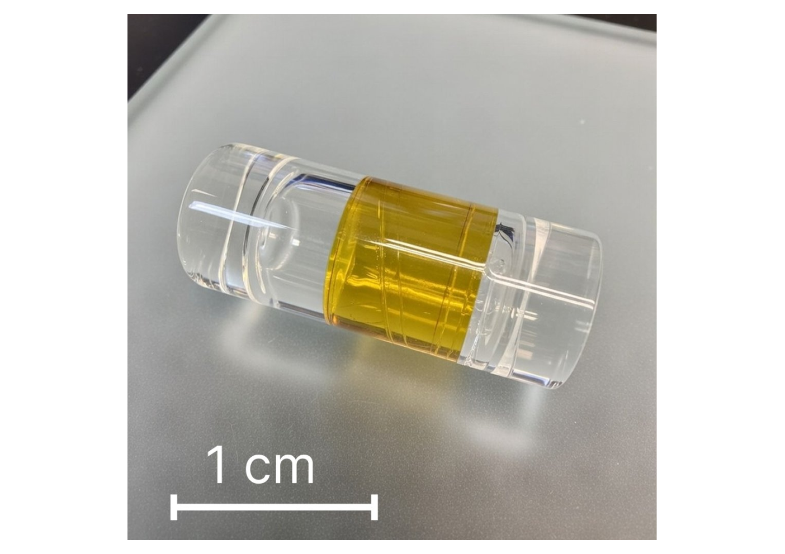
| Parameter | Value | Unit |
|---|---|---|
| 105 000 | - | |
| - | ||
| 7.495 | ||
| 71 | ||
| 27 | % | |
| 28 | % | |
| 27.35 |
对于理想的稳频系统，锁定到谐振腔的激光器的分数频率不稳定度极限由腔长的涨落决定。由这些涨落引起不稳定的热噪声极限由谐振腔热噪声 [33]决定。该噪声源于谐振腔间隔器、反射镜基底和镀膜的热运动。对于所研究的 FP 谐振腔，我们计算得到的分数频率不稳定度热噪声极限约为 （详细分析见附录 A）。
为尽量减小环境噪声的影响，我们将 FP 腔置于压强低于 mbar 的真空腔室中，并在零膨胀温度 处采用主动温度稳定，稳定度为 1 mK。腔室体积小于 l。不过，当前设计包含冗余的热屏蔽层，腔室体积还可进一步减小。腔体由三对相隔 120∘ 排列的支杆支撑。整个支撑结构经有限元分析优化，以尽量降低其对振动的敏感度，并采用聚醚醚酮（PEEK）制造，以减小腔体与环境之间的热耦合。所研制的支撑结构在各个方向上固定 FP 腔，并在倾斜和加速度方面提供机械稳定性。我们测量了 24 小时内腔共振频率的漂移，发现漂移率低于 100 mHz/s。
VIII 致谢
氮化硅芯片由 Qaleido Photonics 制造。本工作由 Russian Science Foundation（项目编号 26-72-10176）资助。
IX 数据可用性
支持本研究结论的数据可在合理请求下向作者索取。
X 附录 A：法布里–珀罗（Fabry–Pérot）腔热噪声的计算
计算腔热噪声的标准方法 [33] 是利用下文的表达式 (1)-(3)，计入间隔器（）、反射镜基底（）和反射镜镀膜（）的贡献。我们分别用 和 表示杨氏模量和损耗角。量 、 和 具有单位频率上长度平方的量纲。
腔间隔器的贡献由 [33] 给出：
| (1) |
其中， 为傅里叶频率， 为腔长， 和 分别为腔间隔器的外半径和内半径， 为腔温， 为玻尔兹曼常数。
腔基底贡献的相应表达式为：
| (2) |
其中， 为反射镜基底的泊松比， 为反射镜上激光束的半径。
腔镀膜的贡献由下式给出
| (3) |
其中， 为反射镜镀膜的厚度。
| Type | PSD () |
|---|---|
时域中的涨落用阿伦偏差 [1] 表征。具有 （闪变频率）功率谱密度的热噪声会产生与平均时间无关的阿伦偏差：
| (5) |
对于本工作所用的腔体，我们计算出激光器分数频率不稳定度的基本极限为：
| (6) |
XI 附录 B：微谐振腔表征流程
为测量微环谐振器（MR）的参数（色散曲线、本征损耗率与耦合损耗率、本征模的品质因子），我们测量待测 MR 的透射谱。表征装置如图 6所示。我们使用连续可调谐激光器（CTL）在1510-1630 nm波长范围内记录 MR 的透射谱。我们采用一台经过校准的辅助马赫-曾德尔干涉仪（MZI）作为频率基准。在激光源于整个可用波长范围内连续扫描的过程中，待测 MR 与基准 MZI 的透射谱被同时记录到示波器的存储器中。随后，用记录得到的 MZI 透射谱作为经过校准的频率刻度。由此，我们得到精确的 MR 透射谱。
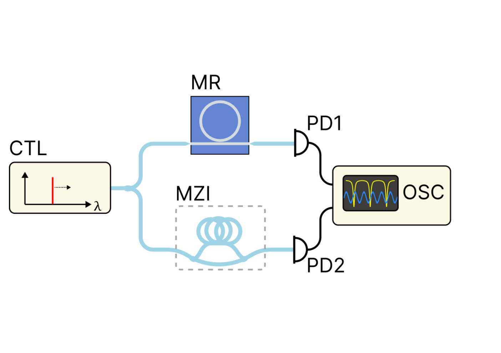
XII 附录 C：三角帽法
为表征 SIL 激光器各自的频率不稳定性，我们利用光纤光频梳和三角帽法，将其与 871-nm 和 1140-nm 激光器进行比较，后两者分别稳频于 8-cm 长的竖直 ULE 谐振腔上。
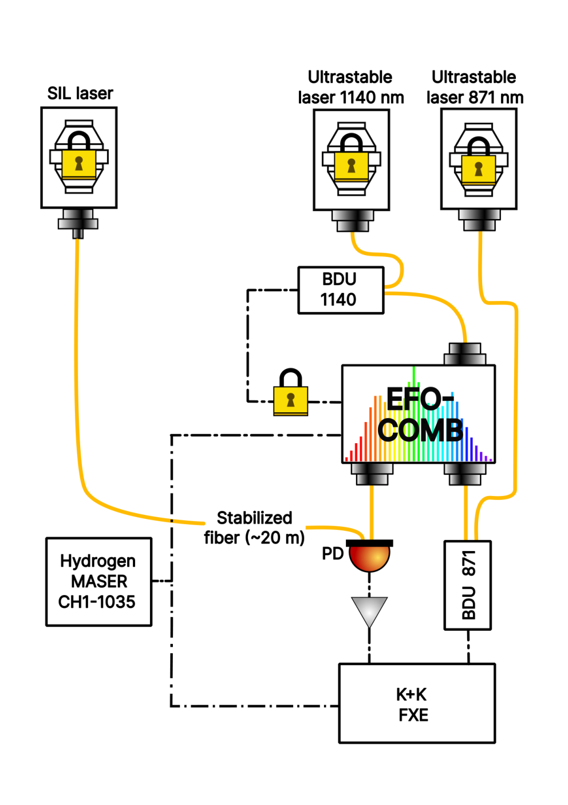
三角帽法通常需要三台激光器，并测量每对激光器之间的拍频。我们的实验实现与这一标准方法略有不同 [39]。如图 7所示，我们只同时记录两个拍频信号：SIL 激光器与频率梳之间的拍频，以及 871-nm 激光器与频率梳之间的拍频。光纤频率梳被锁定到 1140-nm 激光器，因此这些测量分别给出了 SIL+1140 与 871+1140 拍频的相对不稳定性。下文中，我们以波长称呼各激光器系统，并将自注入锁定激光器简称为 SIL 系统。
第三对拍频（SIL+871）可以由两个同时记录的拍频信号重建得到。具体而言，对应的频率起伏由两个测量信号相加或相减获得，其符号取决于两个激光频率相对于梳齿的位置，即每个激光频率高于还是低于梳齿频率。同时采集 SIL+1140 与 871+1140 拍频对这一重建至关重要。
在获得全部三对——SIL+1140、871+1140 和 SIL+871——的相对频率起伏后，我们即可应用三角帽法确定三台激光器系统各自的频率不稳定性。为使该方法给出可靠结果，各系统的相对不稳定性应具有可比的量级；否则，最不稳定系统的不稳定性会主导各对测量，导致所提取的不稳定性具有很大的不确定度。在我们的实验中，这一条件得到满足，所得的相对频率不稳定性如图 8所示。误差棒按照 [61] 中描述的方法计算。
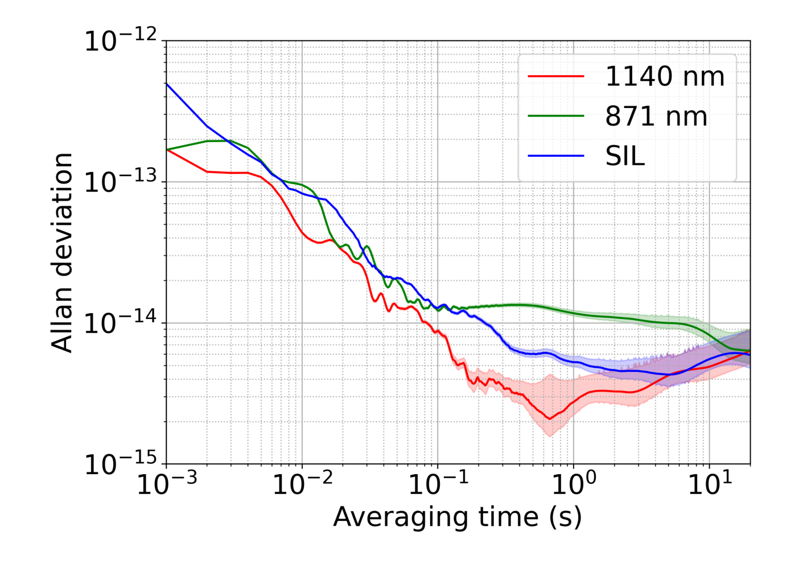
XIII 附录 D：PDH 方法中反馈回路的表征
PDH 稳频系统中的反馈噪声可分为三个部分，每个部分源自系统的不同环节，且需要不同的测量方法：来自伺服控制器前端检测电路的电子噪声、产生于光路中的残差幅度调制（RAM）噪声，以及由伺服控制器自身引入的噪声。
所谓电子噪声，是指检测电路中各类电子元件所产生的噪声，包括光电探测器、射频混频器（鉴相器）和放大器。
残余幅度调制（RAM）源于激光束的非理想相位调制[64, 73]。这种非理想性可由多种效应引起，包括电光调制器（EOM）中与温度有关的双折射、相位调制过程中出现的二次及高次谐波，以及寄生反射[64]。对于频率稳定而言，RAM的绝对水平并不如它随时间的起伏重要，后者会被Pound–Drever–Hall（PDH）稳频系统转换为频率起伏。
对于伺服控制器，首要关注的是其输入噪声。这里所说的输入噪声，是指信号在与设定点比较之前引入的噪声。输入噪声和设定点的起伏都与激光频率起伏引起的信号无法区分，因此会直接影响锁定激光器的频率稳定度。
为确定主导噪声源，我们测量了各部件对频率不稳定度的贡献。为此，使用一台 Rohde&Schwarz HMC8012 精密数字万用表，在稳频系统的不同工作条件下测量误差信号的起伏，即用于PDH的射频混频器的输出电压（示意图见图 1）。
- 1.
电子噪声。 挡住激光辐射，从而在没有光信号贡献的情况下，隔离出探测电路中电子元件产生的噪声。
- 2.
RAM噪声： 存在激光辐射，但关闭频率稳定环路，并将激光频率相对于谐振腔失谐数MHz。在这些条件下，解调信号的起伏来自光路及其相关的RAM，而不是谐振腔共振的起伏。注意，由此测量得到的噪声也包含电子噪声。
- 3.
伺服控制器噪声。 反馈环路工作在锁定状态。此时测得的误差信号起伏，表征了伺服控制器无法抑制的残余噪声。
我们测得误差信号斜率为。将测得的以伏特表示的误差信号起伏除以该斜率，即可得到相应的频率起伏。再由这些频率起伏确定与每类噪声相关的相对频率不稳定度。我们系统中三种噪声贡献的测量示例见图 9。
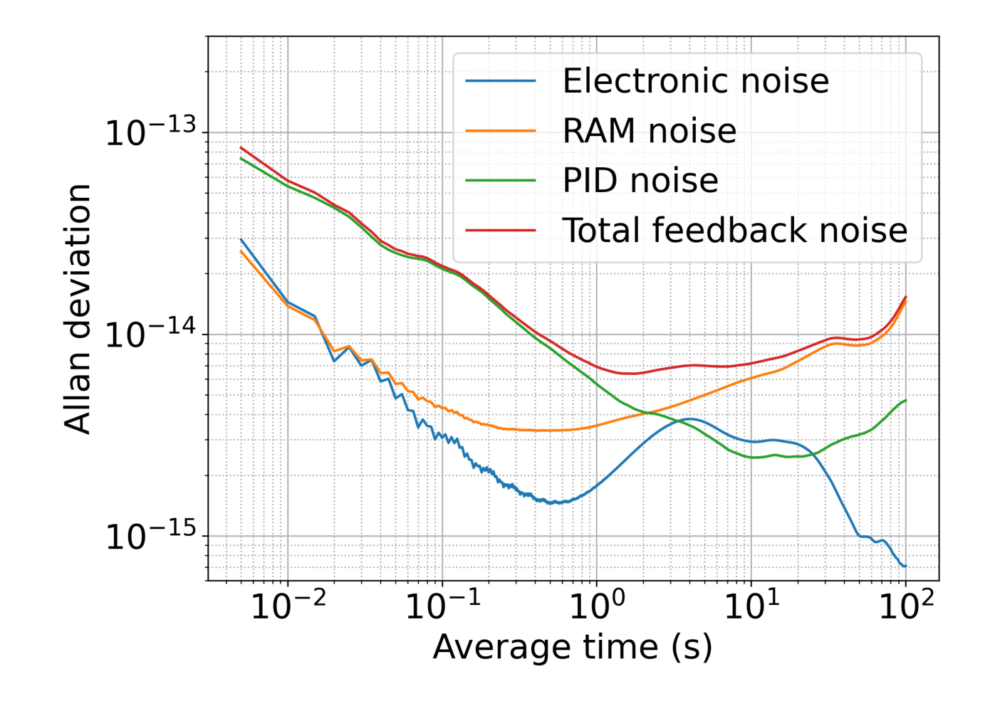
这一流程使我们能够识别主导噪声源，并确定应优先抑制哪些分量。在我们的系统中，测量结果表明，在短平均时间内，伺服控制器噪声是主要限制。通过采用噪声更低的伺服控制器可以实现改进。在较长平均时间内，RAM 涨落成为主要限制。我们注意到，反馈相关噪声[图 9]与热噪声的合成贡献略高于直接测得的激光频率不稳定度[图 2]。我们认为这一差异源于该方法旨在识别主导噪声源，而非给出总体不稳定度的精确定量估计。其准确度可能受以下因素限制：（1）某些噪声源（如残余振幅调制（RAM））无法与频率涨落同时监测，这意味着某些实验参数（如光功率）在不同测量之间可能略有差异；（2）用万用表采集的数据中存在的死时间与非均匀采样，会导致对阿伦偏差的有偏估计。
XIV 附录 E：RAM 的抑制
反馈回路噪声的最大改进是通过采用主动与被动技术抑制 RAM 实现的。如图 10所示，在大于1 s的平均时间内，RAM 稳定使噪声降低一个数量级以上，使分数频率不稳定度低于 。
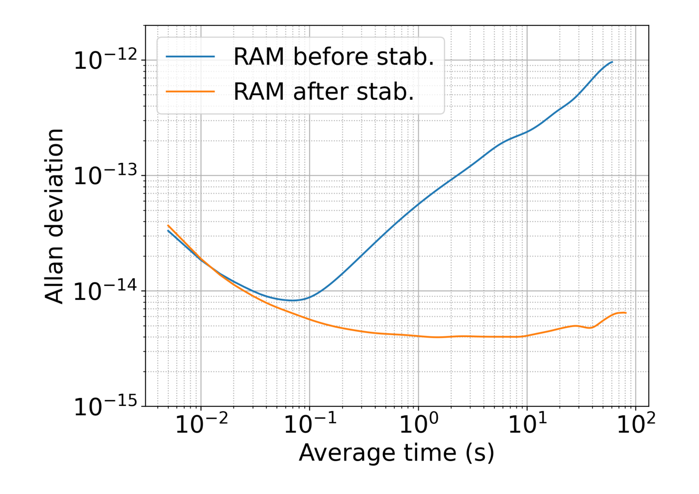
XV 附录 F：线宽计算
为细致评估稳频激光器的性能并便于与已有结果比较，我们采用三种不同方法估计其光学线宽：-分离线法、 积分相位噪声法，以及用频谱分析仪测得的拍频信号的半高全宽（FWHM）。
- 1.
拍频频谱直接由分辨率带宽（RBW）为3 Hz的频谱分析仪记录。由这些数据，我们估计半高全宽为4 Hz，这很可能主要受仪器RBW的限制。
- 2.
分离线方法将频率噪声谱划分为两个区域，这两个区域以不同方式影响激光器的线型。若，则该噪声计入激光器线宽；否则，它仅贡献于线型的边翼。分隔这两个区域的线称为分离线。
激光器线宽按下式计算
其中为频率噪声从测量时间的倒数开始、直至频率噪声谱与分离线交点处的积分。
在图11中，给出了本工作所研究的 SIL 激光器的频率噪声谱密度以及分离线。该方法并不特别适用于超稳激光器，因为其大部分频率噪声位于分离线之下。
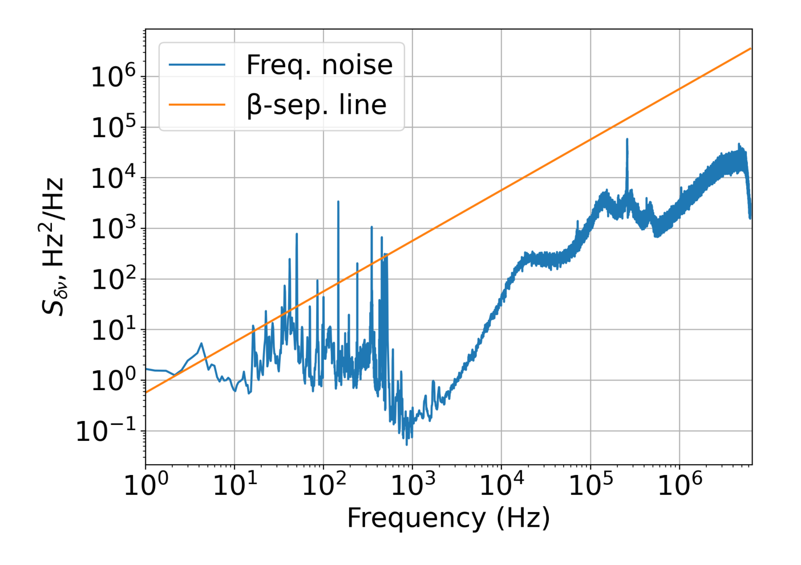
图 11：SIL 激光器的频率噪声功率谱密度与分离线。 - 3.
在 rad2积分法中，需要对相位噪声求积分，从高频向低频进行。积分值超过时所对应的频率即为线宽的一半。将该方法应用于 SIL 激光器的结果见图12。
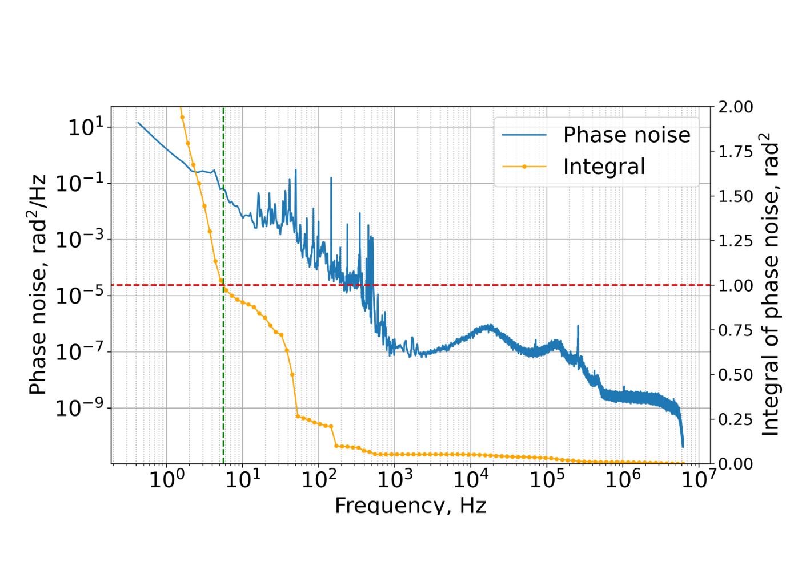
图 12：相位噪声功率谱密度。绿线右侧的相位噪声积分等于 1 rad2
| Method | Linewidth (Hz) |
|---|---|
| 拍频的半高全宽（FWHM），RBW=3 Hz | 4.0 |
| 分离线，1 s 测量时间 | 3.2 |
| rad2-integral | 11 |
XVI 附录 G：未采用 PDH 稳频的 SIL 激光器的阿伦偏差
借助与作为参考的 Avesta 频率梳的拍频，我们测量了工作在 SIL 状态下的激光器的阿伦偏差（图13），其在 1 s 平均时间下为。
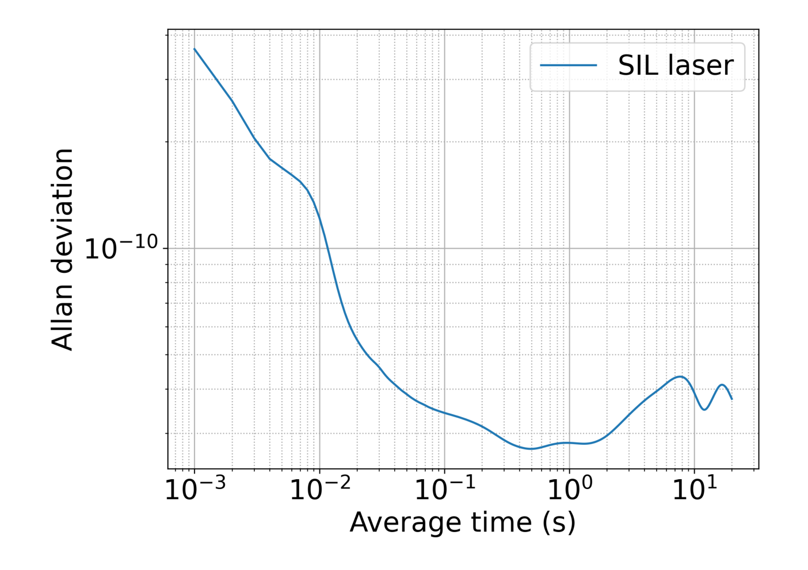
XVII 附录 H：平顶微梳
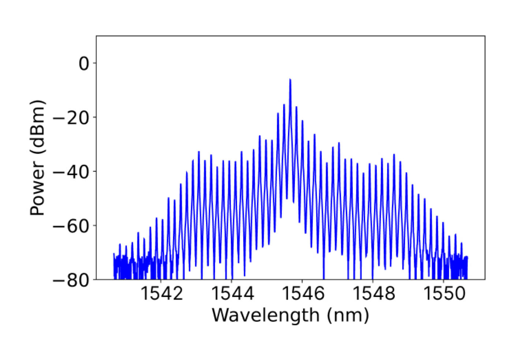
References
- [1] (1981) A modified "allan variance" with increased oscillator characterization ability. In Thirty Fifth Annual Frequency Control Symposium, Vol. , pp. 470–475. Cited by: §X.
- [2] (2008) Subhertz linewidth diode lasers by stabilization to vibrationally and thermally compensated ultralow-expansion glass Fabry-Pérot cavities. Physical Review A—Atomic, Molecular, and Optical Physics 77 (5), pp. 053809. Cited by: §I, Figure 4.
- [3] (2011) Thermal-noise-limited crystalline whispering-gallery-mode resonator for laser stabilization. Physical Review A—Atomic, Molecular, and Optical Physics 84 (1), pp. 011804. Cited by: Figure 4.
- [4] (2001) An introduction to Pound–Drever–Hall laser frequency stabilization. American journal of physics 69 (1), pp. 79–87. Cited by: §XIII, §II.
- [5] (2006) Vibration-induced elastic deformation of Fabry-Pérot cavities. Physical Review A—Atomic, Molecular, and Optical Physics 74 (5), pp. 053801. Cited by: §I.
- [6] (2014) A compact, robust, and transportable ultra-stable laser with a fractional frequency instability of . Review of Scientific Instruments 85 (11). Cited by: Figure 4.
- [7] (2025) A laser with instability reaching based on a 10-cm-long silicon cavity at sub-5-k temperatures. Science Bulletin. Cited by: §I, Figure 4.
- [8] (2025) Harnessing micro-fabry–pérot reference cavities in photonic integrated circuits. Nature Photonics 19 (9), pp. 992–998. Cited by: §I.
- [9] (2022) Dual-laser self-injection locking to an integrated microresonator. Optics Express 30 (10), pp. 17094–17105. Cited by: §I.
- [10] (2013) Tenfold reduction of brownian noise in high-reflectivity optical coatings. Nature Photonics 7 (8), pp. 644–650. Cited by: Figure 4.
- [11] (2025) Hybrid-locked kerr microcombs for flexible on-chip optical clock division. arXiv preprint arXiv:2508.07258. Cited by: §IV, §V.
- [12] (2018) Ultracompact reference ultralow expansion glass cavity. Applied optics 57 (22), pp. 6470–6473. Cited by: Figure 4.
- [13] (1983) Laser phase and frequency stabilization using an optical resonator. Applied Physics B 31 (2), pp. 97–105. Cited by: §I, §II.
- [14] (2026) Optical atomic clocks: defining the future of time and frequency metrology. Optica 13 (1), pp. 143–163. Cited by: §I.
- [15] (2020) Dispersion engineering and measurement of whispering gallery mode microresonator for Kerr frequency comb generation. Nanophotonics 9 (5), pp. 1087–1104. Cited by: §XI.
- [16] (2025) Injection locking for spectral filtering of the addressing laser for optical qubits in ions. Radiophysics and Quantum Electronics 67, pp. 13–22. Cited by: §IV.
- [17] (2011) Ultra-stable radar signal from a photonics-assisted transceiver based on single mode-locking laser. In Optical Fiber Communication Conference, pp. OThA2. Cited by: §I.
- [18] (2024) Synchronous comparison of two thulium optical clocks. JETP Letters 119, pp. 659–664. Cited by: §IV.
- [19] (2000) Rayleigh scattering in high-Q microspheres. Journal of the Optical Society of America B 17 (6), pp. 1051–1057. Cited by: §XI.
- [20] (1974) A method for estimating the frequency stability of an individual oscillator. In Proceedings of the 28th Annual Symposium on Frequency Control, Vol. , pp. 243–246. Cited by: §IV.
- [21] (2024) Long-distance chronometric leveling with a portable optical clock. Physical Review Applied 21 (6), pp. L061001. Cited by: §V.
- [22] (2018) Geodesy and metrology with a transportable optical clock. Nature Physics 14 (5), pp. 437–441. Cited by: §I, §V.
- [23] (2022) Chip-based laser with 1-hertz integrated linewidth. Science advances 8 (43), pp. eabp9006. Cited by: §I, §I, Figure 4.
- [24] (2015) Fractional laser frequency instability with a long room-temperature cavity. Optics letters 40 (9), pp. 2112–2115. Cited by: §I, Figure 4.
- [25] (2014) Sub-hertz-linewidth diode laser stabilized to an ultralow-drift high-finesse optical cavity. Applied Physics Express 7 (2), pp. 022705. Cited by: §I, Figure 4.
- [26] (2019) Thermorefractive noise in silicon-nitride microresonators. Physical Review A 99 (6), pp. 061801. Cited by: §I, Figure 1, §IV, Figure 4.
- [27] (2020) Geopotential measurement with a robust, transportable optical clock. Physical Review A 102 (5), pp. 050802. Cited by: §I.
- [28] (2025) Dispersive-wave-agile optical frequency division. Nature Photonics 19 (6), pp. 624–629. Cited by: §IV, §V.
- [29] (2024) Coherent optical-to-microwave link using an integrated microcomb. IEEE Journal of Selected Topics in Quantum Electronics 30 (5: Microresonator Frequency Comb Technologies), pp. 1–7. Cited by: §I.
- [30] (2021) Hertz-linewidth semiconductor lasers using cmos-ready ultra-high-q microresonators. Nature Photonics 15 (5), pp. 346–353. Cited by: §I.
- [31] (2023) Frequency stability of cryogenic silicon cavities with semiconductor crystalline coatings. Optica 10 (4), pp. 464–470. Cited by: Figure 4.
- [32] (2023) Compact, portable, thermal-noise-limited optical cavity with low acceleration sensitivity. Optics Express 31 (7), pp. 11954–11965. Cited by: Figure 4.
- [33] (2011) Thermal noise in optical cavities revisited. Journal of the Optical Society of America B 29 (1), pp. 178–184. Cited by: §I, §X, §X, §VII.4.
- [34] (2015) Fundamentals of coherent optical fiber communications. Journal of lightwave technology 34 (1), pp. 157–179. Cited by: §I.
- [35] (2023) Recent advances in laser self-injection locking to high-Q microresonators. Frontiers of Physics 18 (2), pp. 21305. Cited by: §I, §II.
- [36] (2020) Modulational instability and frequency combs in whispering-gallery-mode microresonators with backscattering. Physical Review A 101 (1), pp. 013816. Cited by: §XI.
- [37] (2017) Self-injection locking of a laser diode to a high- microresonator. Optics Express 25 (23), pp. 28167–28178. Cited by: §I, §II.
- [38] (2024) Photonic chip-based low-noise microwave oscillator. Nature 627 (8004), pp. 534–539. Cited by: §I, §I, §I, §IV, §V.
- [39] (2021) Comparison of three ultrastable lasers with a femtosecond frequency comb. JETP Letters 114 (5), pp. 243–249. External Links: Document, ISSN 0021-3640, Link Cited by: §XII.
- [40] (2020) Extending the global mass change data record: grace follow-on instrument and science data performance. Geophysical Research Letters 47 (12), pp. e2020GL088306. Cited by: §I.
- [41] (2026) Frequency stability of from a cavity with crystalline mirrors. Physical review letters 136 (3), pp. 033801. Cited by: §I.
- [42] (2011) Field-test of a robust, portable, frequency-stable laser. Optics Express 19 (11), pp. 10278–10286. Cited by: §V.
- [43] (2026) A hertz-level linewidth ultra-stable laser based on centimeter-scale thermal-compensation whispering–gallery–mode microresonators. Optics & Laser Technology 200, pp. 115098. Cited by: Figure 4.
- [44] (2022) 36 hz integral linewidth laser based on a photonic integrated 4.0 m coil resonator. Optica 9 (7), pp. 770–775. Cited by: Figure 4.
- [45] (2024) Ultrastable vacuum-gap Fabry–Perot cavities operated in air. Optica 11 (9), pp. 1205–1211. Cited by: §I, Figure 4.
- [46] (2024) Low-noise microwave generation with an air-gap optical reference cavity. APL Photonics 9 (1). Cited by: §I.
- [47] (2024) A digital servo for ultra-stable laser frequency stabilization. Review of Scientific Instruments 95 (12). External Links: Document, ISSN 10897623 Cited by: §V.
- [48] (2025) Optical atomic clock interrogation using an integrated spiral cavity laser. Nature Photonics 19 (3), pp. 277–283. Cited by: §I, Figure 4.
- [49] (2019) Distributed optical fiber sensing: review and perspective. Applied physics reviews 6 (4). Cited by: §I.
- [50] (2015) Optical atomic clocks. Reviews of Modern Physics 87 (2), pp. 637–701. Cited by: §I.
- [51] (2026) Laser stabilized to a room temperature cavity with AlGaAs coatings reaching fractional frequency instability. arXiv preprint arXiv:2607.01406. Cited by: Figure 4.
- [52] (2017) 1.5 m lasers with sub-10 mHz linewidth. Physical review letters 118 (26), pp. 263202. Cited by: Figure 4, §VII.1.
- [53] (2007) Whispering-gallery-mode resonators as frequency references. i. fundamental limitations. Journal of the Optical Society of America B 24 (6), pp. 1324–1335. Cited by: §I, §VII.1.
- [54] (2022) Miniaturizing ultrastable electromagnetic oscillators: sub- frequency instability from a centimeter-scale Fabry-Pérot cavity. Physical Review Applied 18 (5), pp. 054054. Cited by: §I, Figure 4.
- [55] (2021) Integrated phase-sensitive photonic sensors: a system design tutorial. Advances in Optics and Photonics 13 (3), pp. 584–642. Cited by: §I.
- [56] (2025) From ultra-noisy to ultra-stable: Optimization of the optoelectronic laser lock. APL Photonics 10 (12), pp. 1–10. External Links: Document, ISSN 23780967, Link Cited by: §VII.1.
- [57] (2026) Laser fractional frequency instability at with a room temperature optical reference cavity. Optica 13 (7), pp. 1190–1193. Cited by: §I, Figure 4.
- [58] (2014) Coherent terabit communications with microresonator kerr frequency combs. Nature photonics 8 (5), pp. 375–380. Cited by: §I.
- [59] (2023) Hybrid integrated chip-scale laser systems. APL Photonics 8 (8). Cited by: §I.
- [60] (2019) Electrically pumped photonic integrated soliton microcomb. Nature communications 10 (1), pp. 680. Cited by: §II.
- [61] (2008) Handbook of frequency stability analysis. Vol. 1065, US Department of Commerce, National Institute of Standards and Technology. Cited by: §XII.
- [62] (2024) Roadmapping the next generation of silicon photonics. Nature communications 15 (1), pp. 751. Cited by: §I.
- [63] (2020) Integrated turnkey soliton microcombs. Nature 582 (7812), pp. 365–369. Cited by: §I.
- [64] (2015) Systematic and quantitative analysis of residual amplitude modulation in pound-drever-hall frequency stabilization. Phys. Rev. A 92 (6), pp. 063809. Cited by: §I, §XIII, §III.4.
- [65] (2022) Optimization of laser stabilization via self-injection locking to a whispering-gallery-mode microresonator: experimental study. Optics Express 31 (1), pp. 313–327. Cited by: §II.
- [66] (2024) Microcomb technology: from principles to applications. Photonics Insights 3 (4), pp. R09–R09. Cited by: §I.
- [67] (2026) Lithium niobate quadratic integrated nonlinear photonics: enabling ultra-wide bandwidth and ultrafast photonic engines. Nanophotonics 15 (9), pp. e70107. Cited by: §I.
- [68] (2022) Extending the spectrum of fully integrated photonics to submicrometre wavelengths. Nature 610 (7930), pp. 54–60. Cited by: §I.
- [69] (2023) Thermo-optical bistability in a compact high-Q cavity at a wavelength of 1550 nm. Bulletin of the Lebedev Physics Institute 50 (9), pp. 385–390. External Links: Document, ISSN 1934838X Cited by: §I.
- [70] (2021) Dynamics of soliton self-injection locking in optical microresonators. Nature communications 12 (1), pp. 235. Cited by: §I, §IV.
- [71] (2026) Integrating silicon photonics with complementary metal–oxide–semiconductor technologies. Nature Reviews Electrical Engineering 3 (1), pp. 15–31. Cited by: §I.
- [72] (2014) Precision spectroscopy by photon-recoil signal amplification. Nature communications 5 (1), pp. 3096. Cited by: §I.
- [73] (1985) Residual amplitude modulation in laser electro-optic phase modulation. Journal of the Optical Society of America B 2 (8), pp. 1320–1326. Cited by: §XIII.
- [74] (2022) Silicon nitride passive and active photonic integrated circuits: trends and prospects. Photonics research 10 (6), pp. A82–A96. Cited by: §I.
- [75] (2023) Foundry manufacturing of tight-confinement, dispersion-engineered, ultralow-loss silicon nitride photonic integrated circuits. Photonics Research 11 (4), pp. 558–568. Cited by: §I.
- [76] (2023) Excess noise and photoinduced effects in highly reflective crystalline mirror coatings. Physical Review X 13 (4). External Links: Document, ISSN 21603308 Cited by: §I.
- [77] (2018) On the thermal noise limit of ultrastable optical cavities. Quantum Electronics 48 (5), pp. 425–430. External Links: Document, ISSN 1063-7818, Link Cited by: §I.
- [78] (2016) Characterization of electrical noise limits in ultra-stable laser systems. Review of Scientific Instruments 87 (12). Cited by: §I.